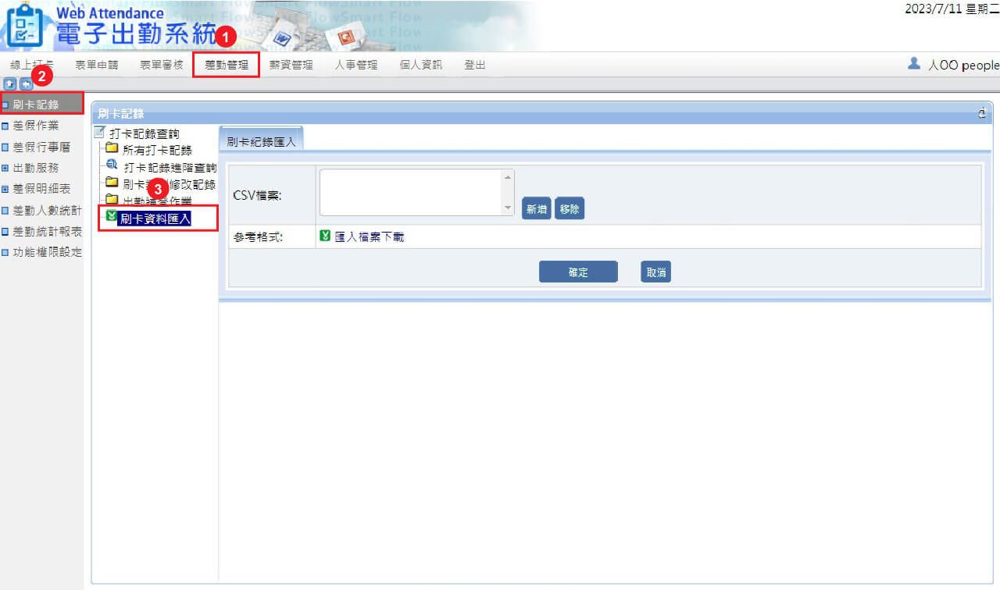

打卡方式有哪些？支持遠端辦公、出差外勤打卡
2023/08/17打卡方式
Class 365 提供數種打卡方式，不管是網頁端或手機端都能進行打卡。手機端可設定「定位打卡」—在設定的地址與指定距離內打卡才能生效。另外，支援匯入考勤機紀錄，輕鬆整合出缺勤紀錄。
1. App：QR Code 打卡
使用 Class 365 專屬 APP 產生 QR Code，再使用企業端的掃瞄器掃瞄 QR Code 完成打卡。
2. App：定位打卡
不管是遠端辦公、出差外勤等打卡需求都沒問題！手機登入 Class 365 專屬 APP 後，位於系統中設定的地址與範圍內，點擊「確認」按鈕打卡。
3. Web：線上打卡
網頁登入後台後到達線上打卡畫面，點擊「確認」按鈕後打卡，時段會依目前時間自動切換為「上班」或「下班」，亦可手動調整。
4. 考勤機：刷卡資料匯入
支援人臉辨識、指紋辨識、刷卡機等資料匯入，協助企業整合出缺勤紀錄、提高作業效率。
1.差勤管理 > 2.刷卡紀錄 > 3. 刷卡資料匯入
如何查詢打卡紀錄？
1.表單申請 > 2.個人差勤資料查詢 > 3. 個人打卡紀錄